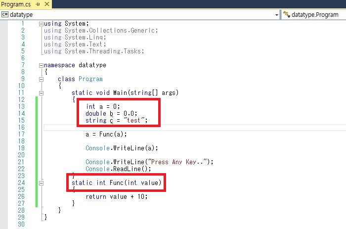
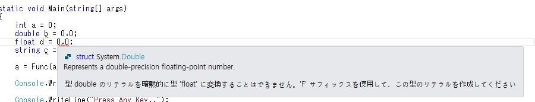

[C#] データタイプとリテラル(literal)、 Nullable
こんにちは。明月です。
今日はデータタイプとリテラル(literal)、Nullableについて勉強します。
とりあえず、データタイプについて説明します。
我々がパソコンでプログラムを作ることは大きい計算機を作ることだと思うと良いです。利用の目的は差異があると思いますが、ゲーム、デザインツール、バッチプログラムなども内部を見ると結局に数の計算になっています。
人間は整数、実数の区別せずに計算ができますが、パソコンの場合は整数、実数、文字が完全に分けてあります。それをデータタイプと命名してメモリを宣言する時に定義します。
そうするとデータタイプ種類と説明に下記に記述します。
| C#データタイプ | .NETデータタイプ | 説明 |
|---|---|---|
| bool | System.Boolean | True or False |
| byte | System.Byte | 8ビットunsigned integer |
| sbyte | System.SByte | 8ビットsigned integer |
| short | System.Int16 | 16ビットsigned integer |
| int | System.Int32 | 32ビットsigned integer |
| long | System.Int64 | 64ビットsigned integer |
| ushort | System.UInt16 | 16ビットunsigned integer |
| uint | System.UInt32 | 32ビットunsigned integer |
| ulong | System.UInt64 | 64ビットunsigned integer |
| float | System.Single | 32ビットsingle precision浮動小数点数 |
| double | System.Double | 64ビットdouble precision浮動小数点数 |
| decimal | System.Decimal | 128ビットDecimal |
| char | System.Char | 16ビットユニコード文字 |
| string | System.String | ユニコード文字列 |
| System.DateTime | 時間 | |
| object | System.Object | すべての親タイプ |

簡単に例を作成してみましたが、データタイプはデータを扱う部分の全てのところで使っています。すなわち、変数宣言、メソッド返却、パラメターなどがありますね。
変数でデータタイプの宣言する部分を見ると「double b = 0.0;」の部分があります。その部分は間違ってないけど、実数のデータタイプは「double」以外に「float」もありますね。
宣言すると「double」系の場合は「double b = 0.0;」は良いけど、「float c = 0.0;」はエラーになりますね。

コードで「0.0」は「double」系に認識するので、データタイプが合わないエラーが発生します。
そうすると、「flaot」系の宣言はどうふうに使うかと見ると「0.0」の語尾に「f」を付けます。それをリテラル(literal)と言います。
| C#リテラルデータタイプ | Suffix | 例 |
|---|---|---|
| long | L | 1024L |
| uint | U | 1024U |
| ulong | UL | 1024UL |
| float | F | 10.24F |
| double | D | 10.24Dまたは10.24 |
| decimal | M | 10.24M |
メモリには基本的にデータがアリ、ナシが存在します。そのことでデータがなしという意味はプログラム的に「null」(ヌル)と呼びます。
でもC#は基本データタイプにはnullを許しません。int(整数データタイプ)の場合は「int a;」に宣言すると基本値「0」が設定します。でもこの基本設定値が問題になるケースがあります。
「0」のことも値として使う場合は変数の初期化して格納された値か計算して格納された値かを判断できないです。その場合に初期化の値を「null」に設定して、変数の状態を「null」か「0」かのことで判断できます。
データタイプに「null」を許されるのはデータタイプの語尾に「?」を付けて「null」を宣言することです。
using System;
using System.Collections.Generic;
using System.Linq;
using System.Text;
using System.Threading.Tasks;
namespace datatype
{
class Program
{
static void Main(string[] args)
{
int? a = null;
a = Func(a);
Console.WriteLine(a);
Console.WriteLine("Press Any Key..");
Console.ReadLine();
}
static int? Func(Nullable<int> value)
{
if (value == null)
{
value = 0;
}
return value + 10;
}
}
}
今までデータタイプについて勉強しました。特にデータタイプとリテラルの場合はC#ではなく、C言語、Javaにと同じ形式で使っていますね。
データタイプとリテラルはプログラム開発の中で大切な部分なのでちゃんと覚えていきましょう。
- [C#] ソケット(Socket)通信をする方法2020/05/13 17:37:13
- [C#] Thread(スレッド)2019/07/24 00:57:35
- [C#] 「IDisposable」と「using」2019/07/23 00:05:40
- [C#] ファイルシステム(File System) - FileStream、 Encoding、 Serializable2019/07/22 23:45:05
- [C#] ファイルシステム(File System) - FileInfo,DirectoryInfo2019/07/22 23:30:17
- [C#] MSDN(Microsoft Developer Network)2019/07/22 23:15:42
- [C#] Attribute(アトリビュート)2019/07/20 02:27:23
- [C#] Reflection(リフレクション)2019/07/20 02:22:03
- [C#] Objectタイプ、varタイプ(匿名タイプ)、dynamicタイプ2019/07/18 22:50:16
- [C#] Partial Type(クラス分割)、拡張メソッド2019/07/18 20:22:16
- [C#] Lamda(ラムダ)2019/07/17 23:06:42
- [C#] LINQ(リンク)-3 (Enumerableクラス)2019/07/17 20:57:00
- [C#] LINQ(リンク)-2 (メソッド式)2019/07/16 22:40:03
- [C#] LINQ(リンク)-12019/07/16 20:41:27
- [C#] event(イベント)2019/07/16 00:59:34
- [Python] 03. Pythonでリスト(list)とタプル(tuple)、そしてディクショナリ(dictionary)、セット(set)2020/05/27 18:49:08
- [Python] 02. データタイプ、変数宣言そしてコメントする方法2020/05/26 18:16:52
- [Python] 01. Python3をインストールする方法(Anacondaインストール)2020/05/25 19:02:44
- [Java] HttpConnectionを利用してウェブページを取得する方法2020/05/20 23:53:24
- [Java] Jsoupを利用してXMLファイル(HTML)を扱う方法2020/05/19 19:32:21
- [C#] 非同期ソケット通信(IOCP)-APMパターン2020/05/18 18:45:37
- [C#] 非同期ソケット通信(IOCP)-EAPパターン2020/05/15 19:31:02
- [C#] ソケット(Socket)通信をする方法2020/05/13 17:37:13
- [C#] NPOIを利用してExcelを読み込んで出力する方法2020/05/08 10:43:52
- [C#] NPOIライブラリを利用してエクセルファイルを生成する方法2020/05/07 01:49:01
- [C#] Geckoライブラリを利用してウェブスクレイピングする方法2020/05/05 00:52:26
- [C#] PDFを作成する方法(iTextSharp)2020/05/03 10:22:40
- [C#] シリアライズ(Serialization)をする方法2020/04/30 19:32:04
- [C#] dynamicタイプの動的パラメータ-DynamicObject(WinFormでASP.MVCのViewBagオブジェクトを使用する方法)2020/04/29 22:41:32
- [C#] Stringの補間式(interpolation)2020/04/27 20:39:57